アバターの詳細を変更する方法（アイコン、説明、名前）
アバターの詳細をiOSアプリで見るには、アバターをギャラリーでプレビューしたときに右上端に表示される「情報」ボタンをタップします（下にあるモバイルアプリのアバターギャラリーの画像をご覧ください）。アイコン、名前、説明はエディターで変更することができます。
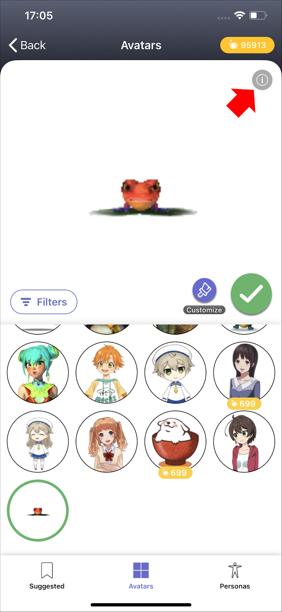
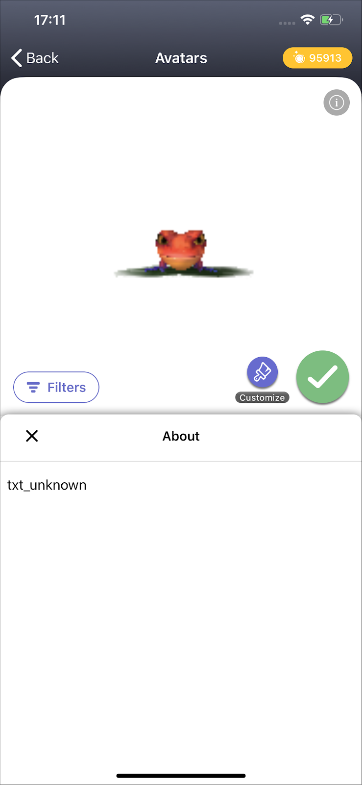
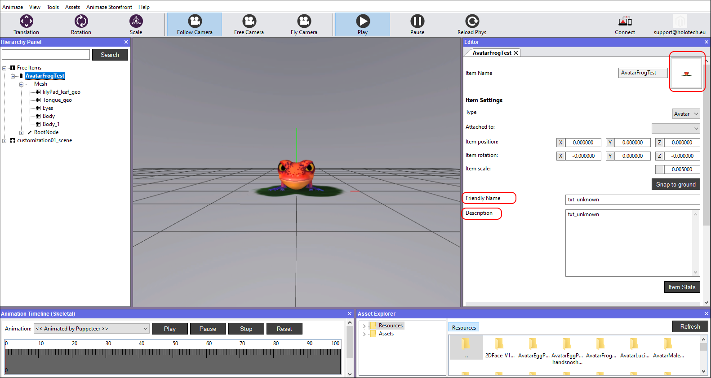
Animazeは、インポートしたアイテムのアイコンを自動で作成します。ですが、アバターをよりよく表現できる画像でアイコンを置き換えることもできます。以下では、アバターのアイコンがある場所、その変更方法、Animazeアプリでの結果を確認する方法を説明します。
アバターのアイコンを変更する手順：
-
PC上のAnimazeエディターのインストールフォルダーに移動します
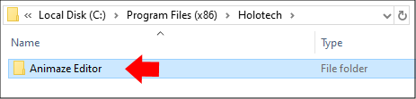
2. 「Data」のフォルダーに移動します
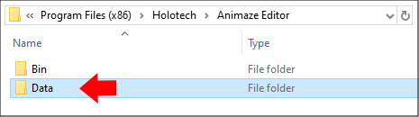
3.「Resources」のフォルダーを開きます
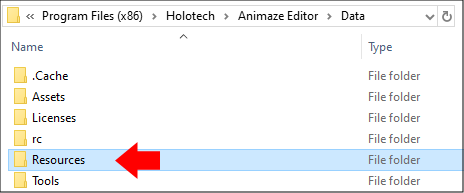
-
アバターのフォルダーを開きます
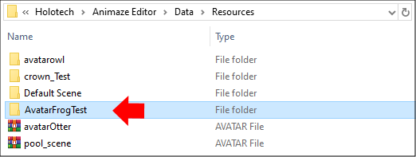
5. 「icon_AvatarName.png」という名前のファイルがあります。インポート時にエディターが自動で作成したファイルです。スクエアサイズで「icon_AvatarName」という命名規則を守った新しいアイコン画像を作成します。これにより、アプリとエディターにおけるアバターのアイコンが変わります。
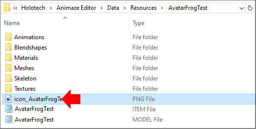
適切に動作させるには、命名規則（icon_AvatarName）、*.pngという画像の形式、スクエアサイズを維持する必要があります。
6. Animazeエディターが変更を検出し、再インポートを求めてきます。「はい」をクリックします
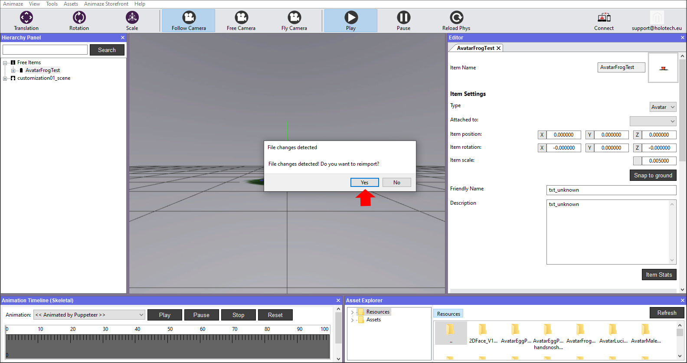
-
変更を確認するには、「アセット」メニューに移動し、「アバターを読み込む」を選択してください。
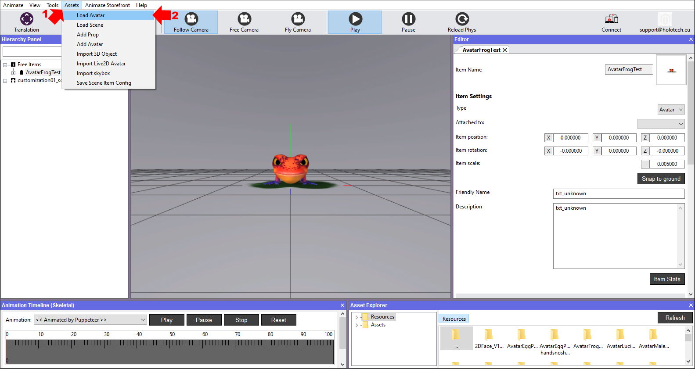
-
「更新」ボタンを押し、AvatarFrogTestを探して選択します。
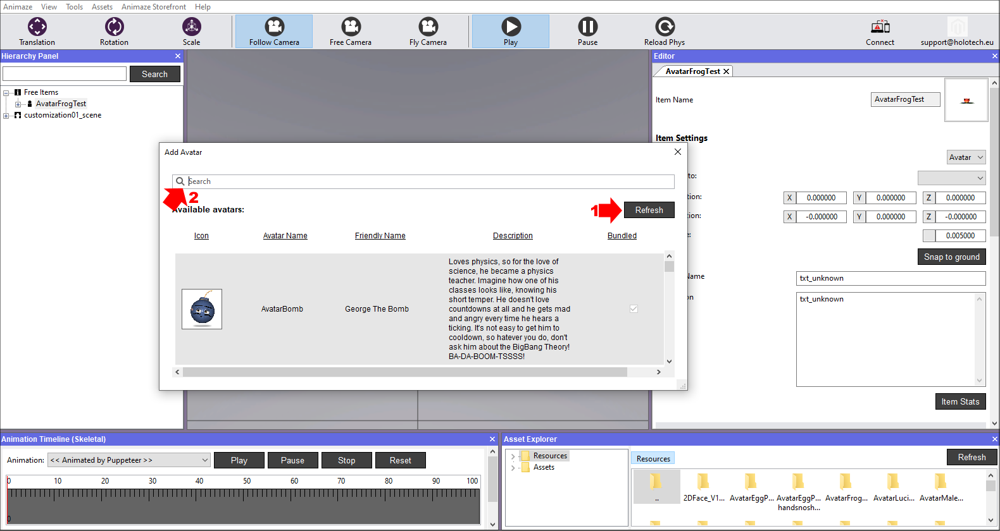
9.アバターが新しいアイコンとして表示されます。
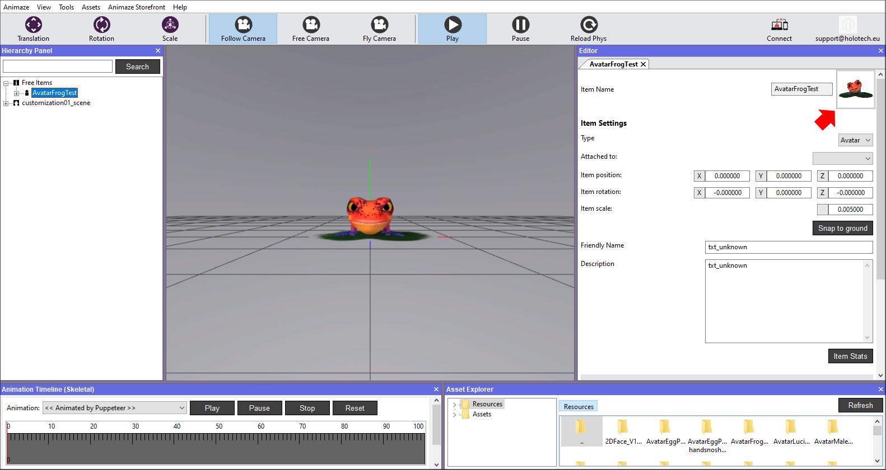
アバターの名前を変更する手順：
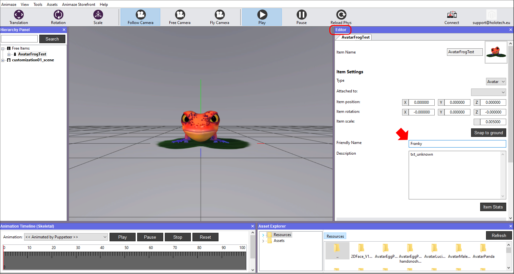
アバターの名前を変更する手順：
-
Animazeエディターを開きます
-
エディターパネルで、フレンドリーな名前のフィールドに好きな名前を入力します。人間が読みやすい名前にする（ランダムな文字列や数字は避ける）ことをお勧めします。なお、使用できるのはアルファベットと特殊文字です。
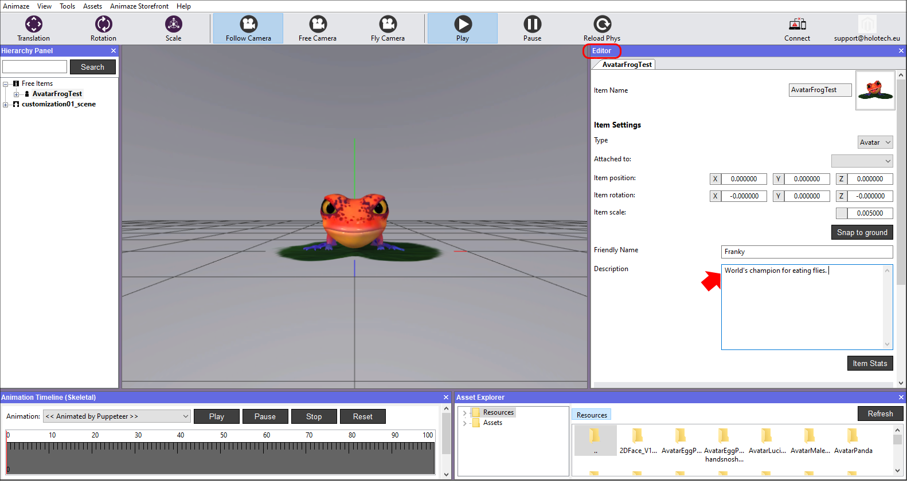
-
名前、説明、その他の詳細などの変更を終えたら、階層パネルでアイテムを保存します。保存せずにAnimazeエディターを終了すると、作業結果がすべて失われます
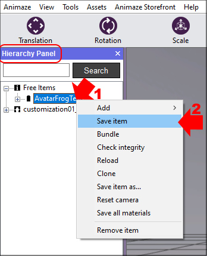
「アイテムの保存形式」を選択すると、エディターが、新しく保存されたバージョンのアイテムを作成し、読み込みます。
すなわち、「アイテムの保存形式」で、「FrogAvatar」として保存すると、「Resources」のディレクトリに、オリジナルのバージョンとは別のフォルダーが新しいアイテムとして作成されます。
デバイスにアバターを送信したら、アプリのアバターギャラリーに移動して、送信したアバターを見つけます。「情報」ボタンをタップして、追加した説明を確認します。